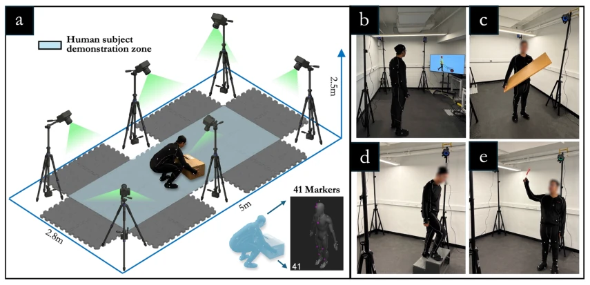
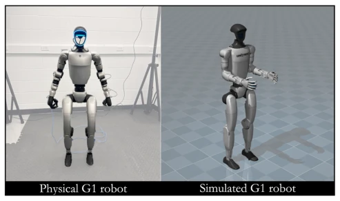
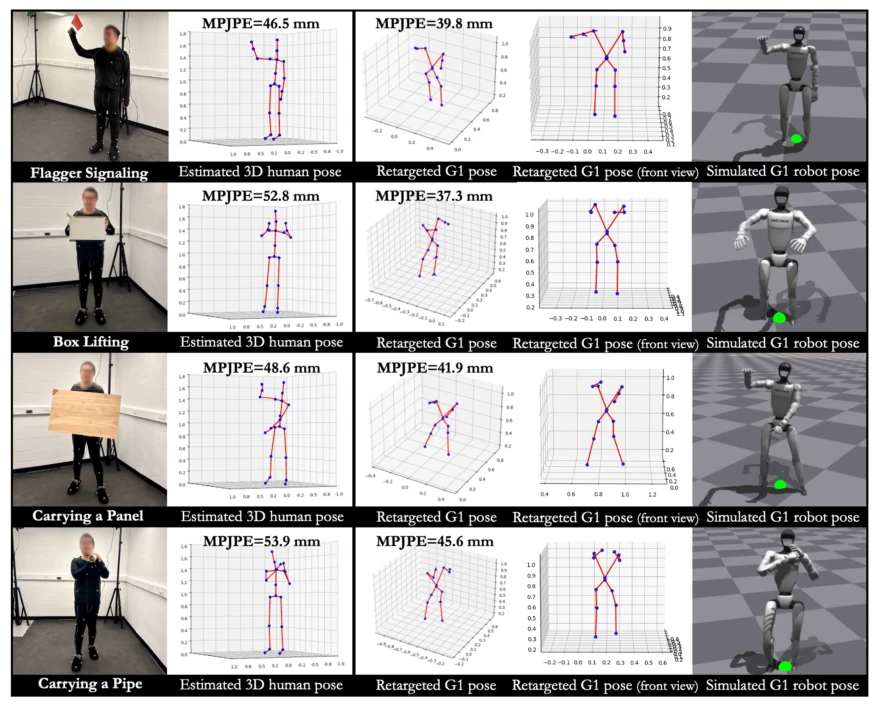
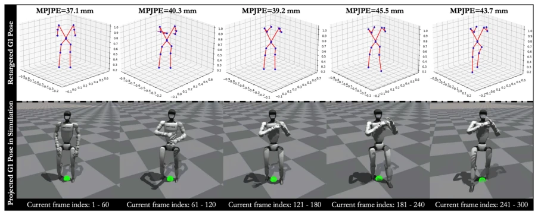
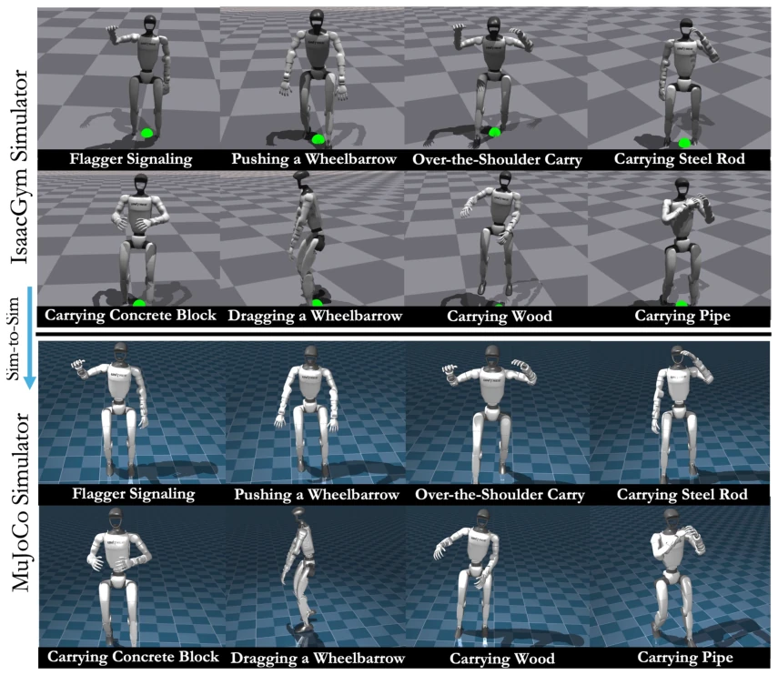

建筑工地是高危环境，工伤事故占全球工作相关死亡的 30% (Hu et al., 2025)，且劳动力短缺 (Deloitte, 2026)。现有机器人多为单任务 (如 SAM 砌砖、Spot 巡检)，缺乏人形机器人的通用性。但人形机器人直接部署面临两大难题：一是人类动作数据无法直接映射到机器人运动学结构 (He, Luo et al., 2024)，现有姿态估计方法多输出人类中心数据，忽略肢体比例差异；二是现有 RL 控制器多针对日常生活，缺乏接触丰富的施工任务稳定性 (Cheng et al., 2024)。本文旨在解决从人类示范到机器人可执行动作的跨域学习与控制问题，填补形态不匹配与物理可行性之间的鸿沟。
—

Fig. 5. Experimental setup for capturing human demonstrations of construction-related tasks: (a) layout of the data-collection workspace; (b) subject familiarization with each action prior to recording; (c) wood-carrying demonstration; (d) stair-climbing demonstration; and (e) flag-signaling demonstration.
Fig. 6. Dataset annotation and pose representations used to train and evaluate Humanoid-PoseNet and to generate motion-sequence inputs for Humanoid-ActionNet: (a) OptiTrack 30-joint skeleton; (b) mapped 21-joint human pose; (c) 14-joint humanoid pose representation; (d) example annotated 3D human pose; and (e) example annotated 3D humanoid pose.

Fig. 7. Simulated and physical Unitree G1 humanoid robot used for sim-to-sim and sim-to-real evaluation.

Fig. 8. Performance of Humanoid-PoseNet in 3D human pose estimation and 3D human-to-humanoid retargeting.
其他图片Other Figures

Fig. 9. Example human-to-humanoid retargeting result for a construction-related action (carrying-pipe).

Fig. 11. Sim (IsaacGym)-to-sim (MuJoCo) evaluation of the distilled student policy on the Unitree G1 across eight tested construction-related actions.